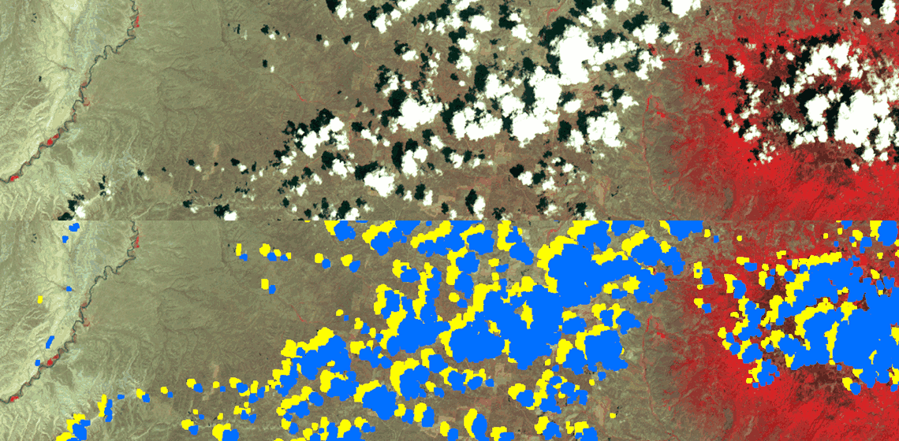

Here is an example demonstrating the performance of a cloud and cloud shadow masking algorithm. The first image shows only one portion of the full image. When you scroll over the image, it will adjust its position to show the other half the of the image.
Move your cursor in and out of the image to alternate the mask overlay.
Here is the original image:
